Projects
EFUs | EFUB Summer Web Surf
단체의 회비와 행사 예산을 쉽고 투명하게 관리하는 웹 서비스
- 팀원 : 총 6명
- 역할 : Backend — 거래·영수증 관리, AWS S3 연동, 영수증 OCR
- Skills used: Java, Spring Boot, Spring Data JPA, AWS S3, Python, FastAPI, PaddleOCR
맡았던 부분
- 수입·지출 등록·조회·수정·소프트 삭제 및 변경 이력 조회 API 구현
- 날짜·거래 유형 필터와 페이지네이션을 지원하는 가계부 조회 API 구현
- 행사 등록 및 예산·누적 지출·잔여 예산 조회 API 구현
- S3 Presigned URL 기반 영수증 등록·교체·조회·삭제 구현
- 영수증 이미지에서 결제 금액을 추출해 거래 등록 화면의 금액 입력을 돕는 OCR API 구현
주요 개선
- OCR 엔진 교체: 외부 API 호출당 과금을 피하기 위해 AWS Textract에서 PaddleOCR 기반 FastAPI 서비스로 전환하고, OCR 인터페이스와 금액 파서를 분리해 기존 도메인 로직 재사용
- 금액 오인식 보완: 전화번호·승인 번호 등을 제외하고 금액 범위와 출현 빈도를 활용하는 금액 파서 구현
- 거래 등록 흐름 개선: 거래 생성 전 파일 선택 즉시 금액을 인식할 수 있도록 transactionId 없이 호출하는 이미지 직접 OCR API 추가
- 반복 조회 방지: 거래 ID 목록으로 영수증을 일괄 조회하고 Map으로 매핑해 거래별 영수증 조회가 반복되는 구조 개선
Moodico | 무디코
나만의 컬러와 무드에 맞춘 메이크업 제품을 한눈에 추천해주는 웹 서비스
- 팀원 : 총 5명
- 역할 : BE | 백엔드
- Skills used: Python, Django, SQLite, Nginx, Gunicorn, Selenium, Github Actions
- 맡았던 부분 : 배포, 회원가입 및 일반 로그인 + 소셜 로그인(카카오), 데이터 크롤링, 아이템 이미지 기반 추천 기능, 인기상품 추천 기능, 오늘의 추천 카드 기능
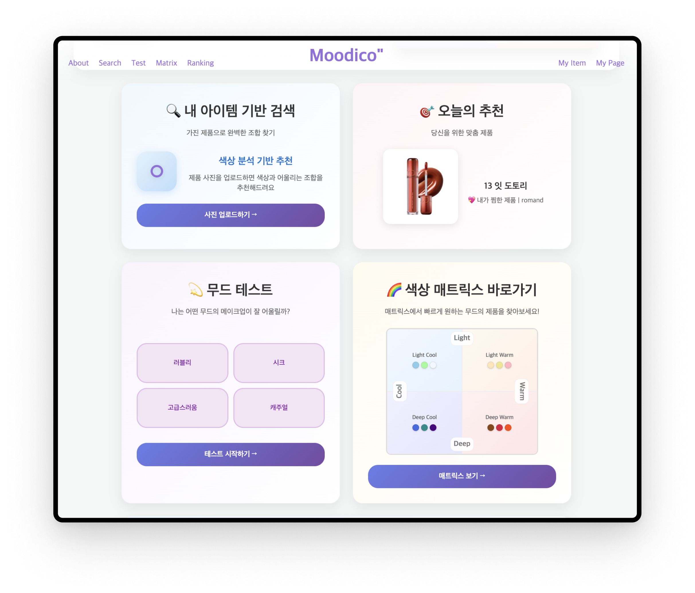
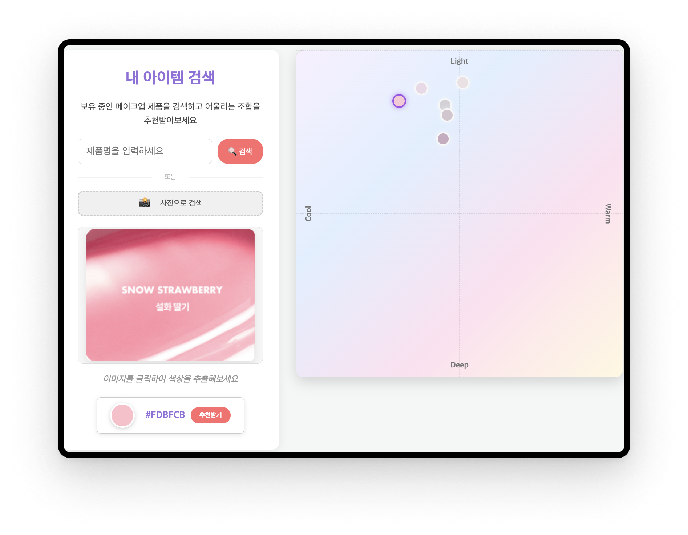
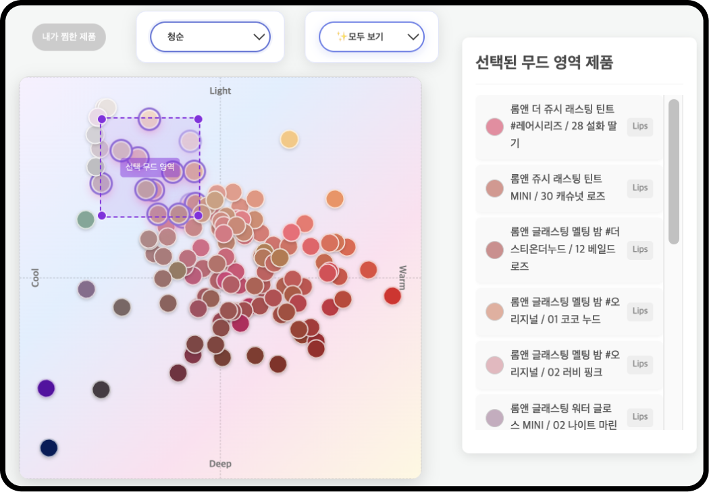
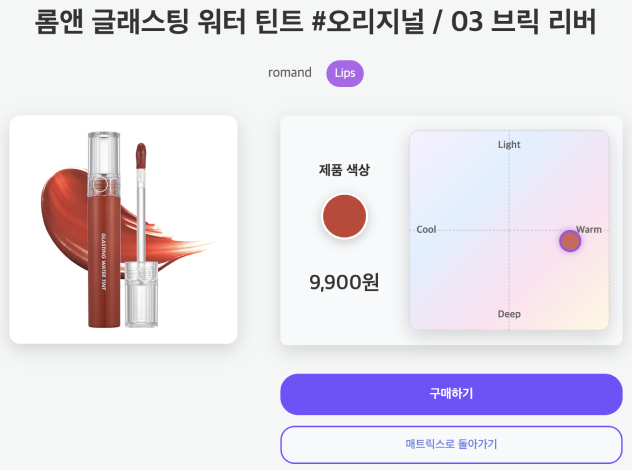
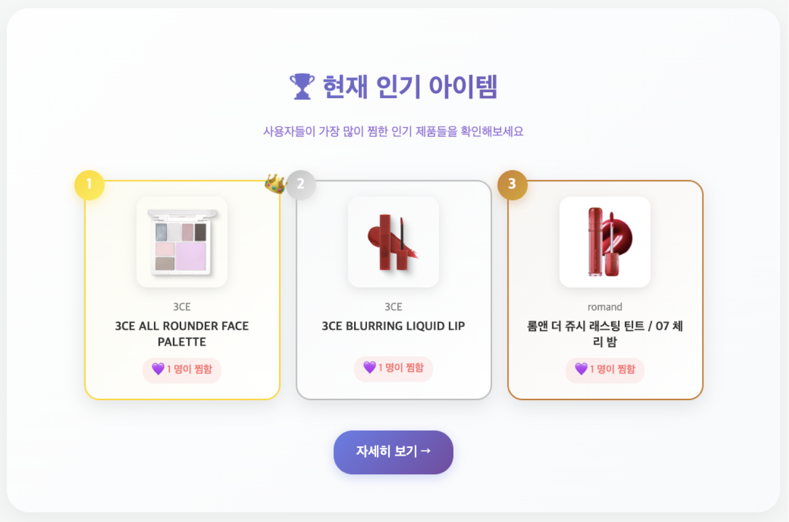
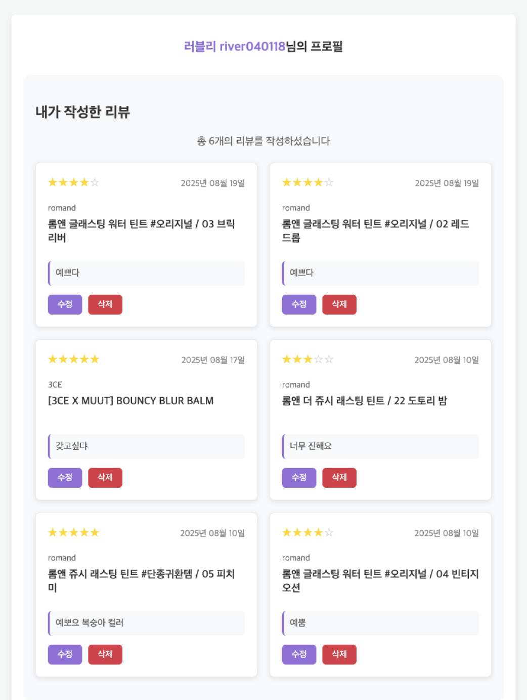
NeuralTimes
AI 기반 뉴스 편향성 분석·요약 서비스 : AI 모델을 통해 뉴스를 (1) 주관성 탐지 (2) 진보/보수적 성향 분류 (3) 요약 텍스트 로 분석하여 사용자가 기사의 편향성을 스스로 판단할 수 있는 정량적 지표를 제시
- 팀원 : 총 4명
- 역할 : 팀장
- Models used: KoELECTRA, KoBart-base-v1
- 맡았던 부분 : 데이터 수집, 데이터 전처리 및 분석, 요약 모델, 인터페이스 구현
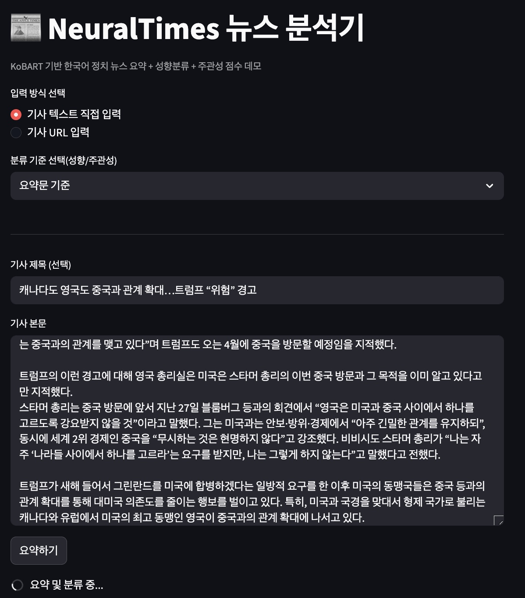
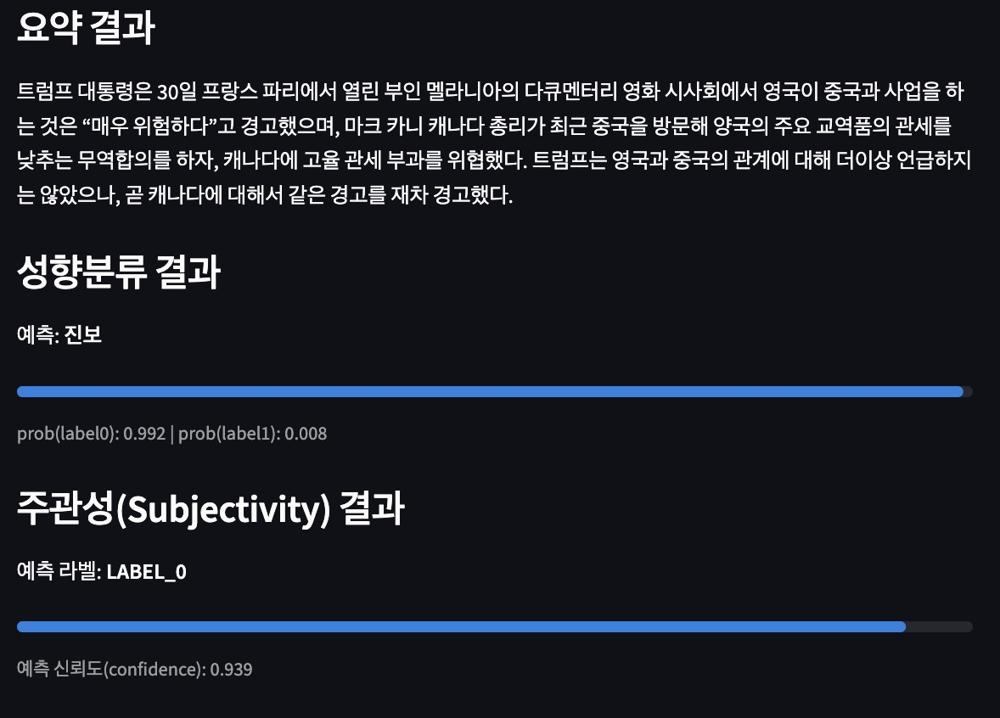
EURONimals
PetFinder.my 플랫폼에 등록된 유기동물의 입양 속도/가능성을 예측하는 머신러닝 모델 개발
- 팀원 : 총 4명
- 역할 : 팀장
- Skills used: Python, Pandas, NumPy, Matplotlib, Seaborn, Scikit-learn
- 맡았던 부분 : 데이터 전처리 및 EDA, 피처 엔지니어링 및 모델링, 모델 튜닝 및 분석(LightGBM), 최종 분석, 시각화, Django폼 만들기
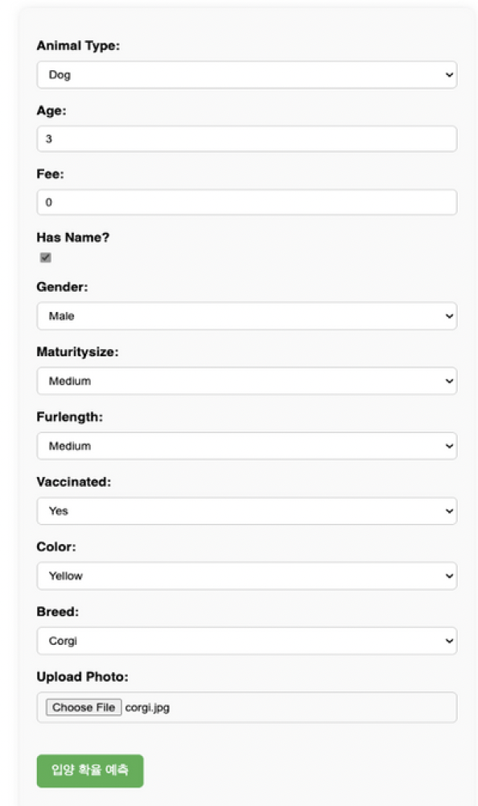
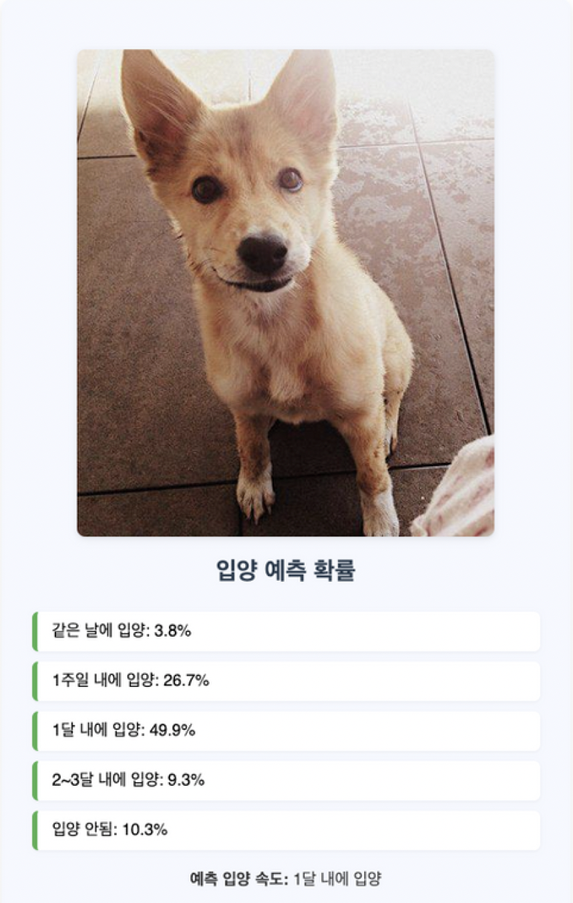
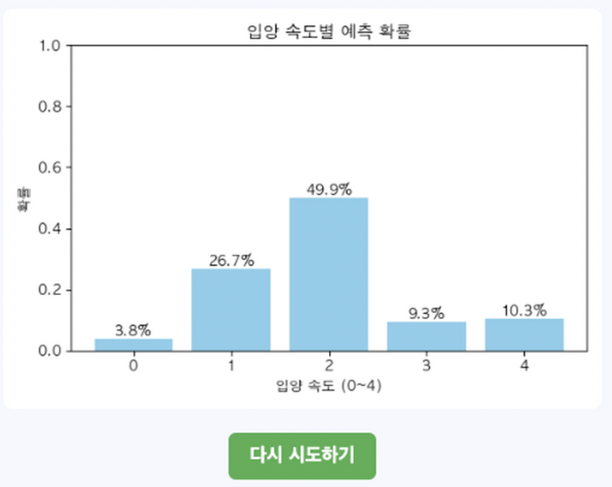
SoundSight | Google Solution Challenge 2026
영상의 시각 정보, 오디오 특성, 자막을 AI로 분석해 청각적 감정을 시각 효과와 진동으로 전달하는 청각장애인 접근성 서비스
- 팀원 : 총 4명
- 역할 : Backend
- Skills used: Python, Docker, Django REST Framework, Celery, yt-dlp, FFmpeg
맡았던 부분
- 개발 환경의 일관성을 위한 Python 의존성 및 Docker 설정
- Django 프로젝트 초기화 및 REST API 스켈레톤 구현: /api/analyze, /api/status, /api/result
- YouTube URL 입력부터 WAV 다운로드 및 구간 분할까지의 오디오 추출 파이프라인 구현
- 영상 업로드 → 작업 큐 → AI 파이프라인 호출 → 결과 저장으로 이어지는 비동기 백그라운드 처리 구현
Experience
2026-03 – Current
EFUB : 웹 개발 동아리
6기 Intern Developer(Backend)
2025-09 – Current
Google Developer Groups on Campus Ewha
7th Server Member | 8th Lead/Organizer
2025-06 – 2026-02
9개월
Pirogramming(파로그래밍) : 웹 개발 동아리
23기 멤버, 24기 교육팀
2025-03 – 2026-08
약 1년 반
EURON(유런): 인공지능 동아리
8기 ML 세션 | 9기 DL 세션 | 10기 회장
2024-09 – 2025-08
약 1년
EDOC(이독): 알고리즘 동아리
Bronze | Gold | Platinum 세션